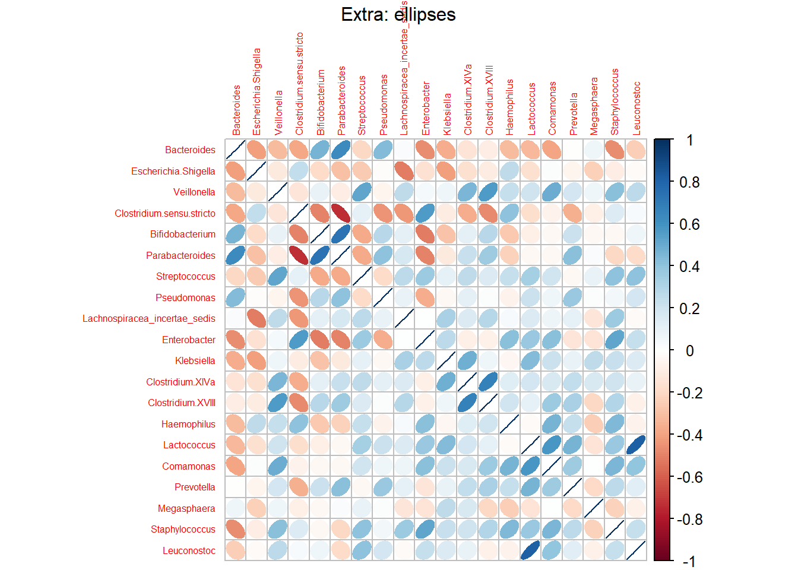

Code
library(tidyverse)
library(ggplot2)
library(Hmisc)
library(corrplot)
library(ggrepel)Sharon
February 13, 2025
Some good and some bad plots.
4 different color hues effectively separate the type of bacterial genera.
The length of the bar clearly shows the relative amounts of each genera.
Figure 2 contains a lot more data, but many of these bacterial relative abundances are zero and the tallest line is the Unclassified genera.
“The importance of the attribute should match the salience of the channel”- in this case the large unclassified block and the inclusion of far too many genera impact the effectiveness of this plot.
#pie chart
sub1_bysat_pie <- ggplot(sub1_sat_FA, aes(x="",y=Abundance, fill=Fatty_acid))+
geom_bar(stat="identity", width=1)+
coord_polar("y", start=0)+
geom_text(aes(label=label), size=3, position=position_stack(vjust=0.5),
check_overlap = T)+
theme_void()+
labs(title="Fatty Acid Composition by Saturation Level for Subject 1",
fill="Fatty Acid")+
theme(legend.position="right")
sub1_bysat_pie#pie chart
sub1_pie <- ggplot(sub1_FA, aes(x="",y=Abundance, fill=Fatty_acid))+
geom_bar(stat="identity", width=1)+
coord_polar("y", start=0)+
geom_text(
aes(label=label),
position=position_stack(vjust=0.5),
check_overlap = T,
size=3
)+
scale_fill_viridis_d(option="H")+
theme_void()+
labs(title="Fatty Acid Composition by individual fatty acid for Subject 1",
fill="Fatty Acid")+
theme(legend.position="right")
sub1_pie
I think we can clearly distinguish both stronger and weaker correlations, and also the direction of correlation.
I think that the little triangles of light blue and light orange cannot be distinguished. This plot also contains redundant data (upper and lower triangle) which makes it hard to know what is actually important.
I think the ellipses are terrible.
---
title: "Assignment 4"
subtitle: "Marks and Channels"
author: "Sharon"
date: "2025-02-13"
format: html
categories: [Assignment, DataViz]
image: Dwight.jpg
code-fold: true
code-tools: true
descrption: "fecal data gone wrong"
---
# Assignment 4
Some good and some bad plots.
# Packages
```{r setup, include=FALSE}
knitr::opts_chunk$set(warning = FALSE, message = FALSE)
```
```{r}
library(tidyverse)
library(ggplot2)
library(Hmisc)
library(corrplot)
library(ggrepel)
```
# Load RDS objects
```{r}
IF_top30 <- readRDS("IF_top30.rds")
IF_top30[1:12,1:4] -> IF_top30
```
# Modify the data table
```{r}
IF_top30 <- IF_top30 |> rownames_to_column(var="Subject")
```
```{r}
IF_top30 |> pivot_longer(
cols=-Subject,
names_to="Bacteria",
values_to="Abundance") -> IF_top30
```
# Expressiveness and Effectiveness
## Figure 1
4 different color hues effectively separate the type of bacterial genera.
The length of the bar clearly shows the relative amounts of each genera.
```{r}
g1 <- ggplot(IF_top30, aes(x= Subject, y= Abundance, fill=Bacteria)) +
geom_bar(stat="identity") +
labs(title="Figure 1: Top 4 baby poop bacterial genera in 12 healthy infants",
x="Subject",
y="Relative Abundance")+
theme_bw()
g1
```
## Figure 2
```{r}
IF_top30_2 <- readRDS("IF_top30.rds")
IF_top30_2 <- IF_top30_2 |> rownames_to_column(var="Subject")
```
```{r}
IF_top30_2 |> pivot_longer(
cols=-Subject,
names_to="Bacteria",
values_to="Abundance") -> IF_top30_2
```
Figure 2 contains a lot more data, but many of these bacterial relative abundances are zero and the tallest line is the Unclassified genera.
"The importance of the attribute should match the salience of the channel"- in this case the large unclassified block and the inclusion of far too many genera impact the effectiveness of this plot.
```{r}
g2 <- ggplot(IF_top30_2, aes(x= Subject, y= Abundance, fill=Bacteria)) +
geom_bar(stat="identity") +
labs(title="Figure 2: Baby poop bacterial genera",
x="Subject",
y="Relative Abundance")+
theme_bw()
g2
```
# Discriminability
## Figure 3
```{r}
FA_relabund <- readRDS("FA_relabund_avg_no_overlap.rds")
FA_relabund |> rownames_to_column(var="Subject") -> FA_relabund
```
```{r}
FA_relabund_bysat <- readRDS("FA_bysaturation.rds")
sub1_sat_FA <- FA_relabund_bysat |> filter(Participant=="A003") |>
pivot_longer(cols=-Participant, names_to = "Fatty_acid", values_to = "Abundance")
sub1_sat_FA <- sub1_sat_FA |> mutate(label=paste0(round(Abundance,1),"%"))
```
```{r}
#pie chart
sub1_bysat_pie <- ggplot(sub1_sat_FA, aes(x="",y=Abundance, fill=Fatty_acid))+
geom_bar(stat="identity", width=1)+
coord_polar("y", start=0)+
geom_text(aes(label=label), size=3, position=position_stack(vjust=0.5),
check_overlap = T)+
theme_void()+
labs(title="Fatty Acid Composition by Saturation Level for Subject 1",
fill="Fatty Acid")+
theme(legend.position="right")
sub1_bysat_pie
```
## Figure 4
```{r}
sub1_FA <- FA_relabund |>
filter(Subject=="A003") |>
pivot_longer(cols=-Subject, names_to="Fatty_acid", values_to = "Abundance") |>
mutate(label=paste0(round(Abundance,3),"%")) |>
arrange(desc(Abundance)) |>
mutate(Fatty_acid = factor(Fatty_acid, levels=Fatty_acid))
```
```{r}
#pie chart
sub1_pie <- ggplot(sub1_FA, aes(x="",y=Abundance, fill=Fatty_acid))+
geom_bar(stat="identity", width=1)+
coord_polar("y", start=0)+
geom_text(
aes(label=label),
position=position_stack(vjust=0.5),
check_overlap = T,
size=3
)+
scale_fill_viridis_d(option="H")+
theme_void()+
labs(title="Fatty Acid Composition by individual fatty acid for Subject 1",
fill="Fatty Acid")+
theme(legend.position="right")
sub1_pie
```
# Separability
## Figure 5
I think we can clearly distinguish both stronger and weaker correlations, and also the direction of correlation.
```{r}
IF_top30_fresh <- readRDS("IF_top30.rds")
IF_IF_rcorr <- rcorr(as.matrix(IF_top30_fresh[1:20,1:20]), type=c("spearman"))
```
```{r}
corrplot(IF_IF_rcorr$r, p.mat=IF_IF_rcorr$P, sig.level=c(0.01,0.05),
insig='label_sig', pch.col='black', pch.cex=0.7,
method=c("circle"), tl.cex=0.5, order="AOE", type="lower", diag = F)
mtext("Infant Fecal Microbiome Correlation with AOE Cluster (6 mo avg)", line =3)
```
## Figure 6
I think that the little triangles of light blue and light orange cannot be distinguished. This plot also contains redundant data (upper and lower triangle) which makes it hard to know what is actually important.
```{r}
IF_IF_rcorr2 <- rcorr(as.matrix(IF_top30_fresh[1:20,1:20]), type=c("spearman"))
corrplot(IF_IF_rcorr2$r, pch.col='black', pch.cex=0.7,
method=c("pie"), tl.cex=0.5)
mtext("Figure 6 - messy shapes that can barely be distinguished", line =3)
```
## Extra
I think the ellipses are terrible.
```{r}
corrplot(IF_IF_rcorr2$r, pch.col='black', pch.cex=0.7,
method=c("ellipse"), tl.cex=0.5)
mtext("Extra: ellipses", line =3)
```